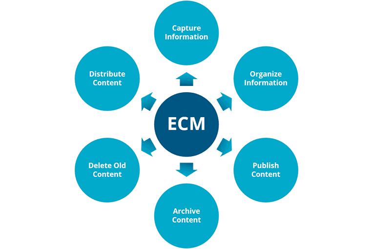

Ultra Treasure customized ECM (Enterprise Content Management) system focuses on improving collaboration and communication efficiency within the enterprise. We aim to create a secure, efficient, and fully utilized digital technology management platform. Enterprise CMS is a key element in digital transformation, streamlining website maintenance, file management, and document approval processes. It stores both traditional paper and digital documents in a single data repository, enabling secure information sharing among company departments. A custom CMS development company helps you achieve a competitive ROI with:
-
Decades of Industry Expertise
Our solutions are finely tuned to meet the unique challenges of diverse business sectors.
-
An All-in-One CMS Solution
Experience a seamlessly integrated solution for cross-departmental collaboration and document management, fostering a connected and efficient work environment.
-
Share Smart, Share Safe
With Enterprise-Level Information Security, you can confidently collaborate, ensuring your company assets stay protected and compliance standards are met.
-
Seamless User Experience, both backend and frontend
From easy-to-use platform design to system integration and development, we deliver the most effortless user Interface - so your team has an easy onboarding process.
Benefits of Enterprise Content Management Systems
Features of Cloud Interactive Enterprise CMSs
Content Creation & Storage
- Custom templates
- Content taxonomy
- Web-based content editing
Administration
- Our custom cms development services comply with information security standards, undergoing vulnerability scanning, and penetration testing.
- Regular maintenance including security updates for operating systems, databases, and application software.
- Versioning
- Audit trail
- Content retention and deletion policies
- Regulatory compliance
Distribution and Publishing
- SEO friendly
- Content review and approval workflows
- Responsive Web Design (RWD) and Mobile-friendly
- Multi-site and multi-language support
Security and Compliance
- Content governance
- Approval workflow
- Reporting and analysis
- Role-based permission
- Easy data retention and retrieval: Safeguard vital details including names, events, timestamps, and locations while archiving essential documents like contracts and quotations.
Benefits of Custom Enterprise Content Management Systems
-
Enhanced Collaboration
Tailored ECM solutions can be configured to promote seamless collaboration among teams. Features such as document sharing, version control, and collaborative editing foster a more efficient work environment.
-
Effortless Information Management
Locate and access both structured and unstructured files with ease, ensuring that all essential information is readily available.
-
Business Process Automation
By automating repeatable tasks and efficiently routing documents, you can achieve faster turnaround times and reduce errors, enhancing overall operational efficiency.
-
Scalability
Custom CMS website development is designed to meet the changing needs of your business. Whether you are looking to increase your user base, add new features, or integrate new technologies, our custom CMS is built to scale, which means that your digital infrastructure can evolve along with your business needs without any hassle.